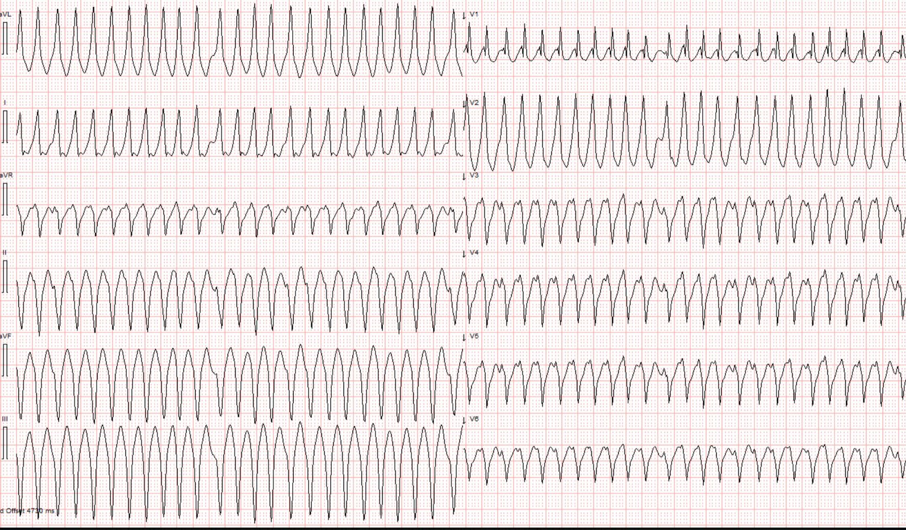
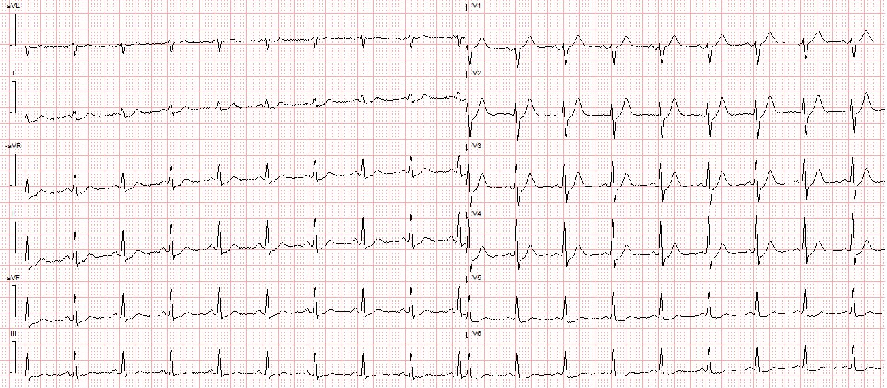
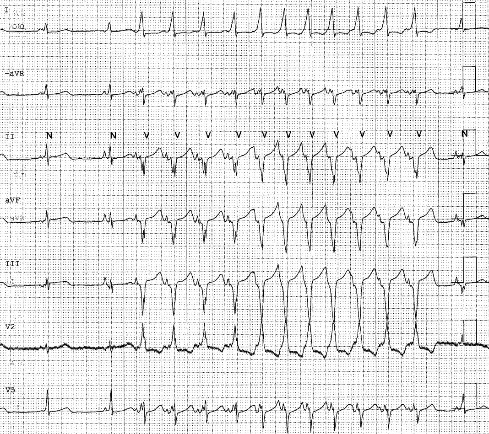
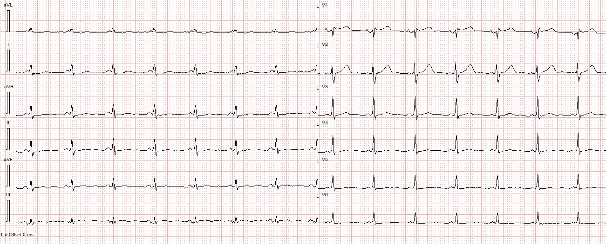
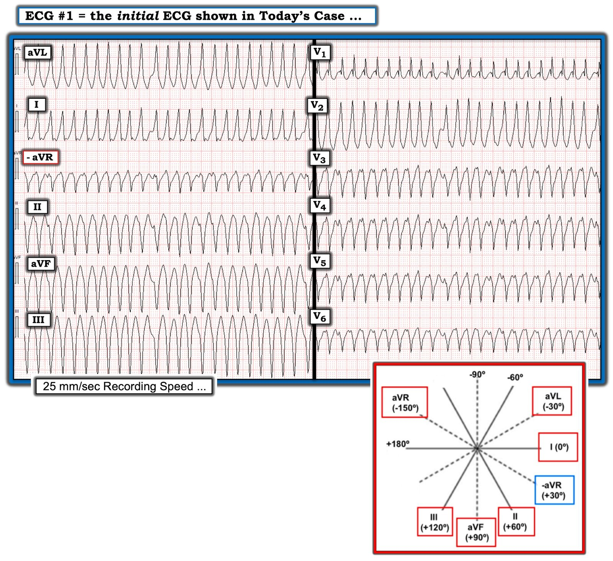
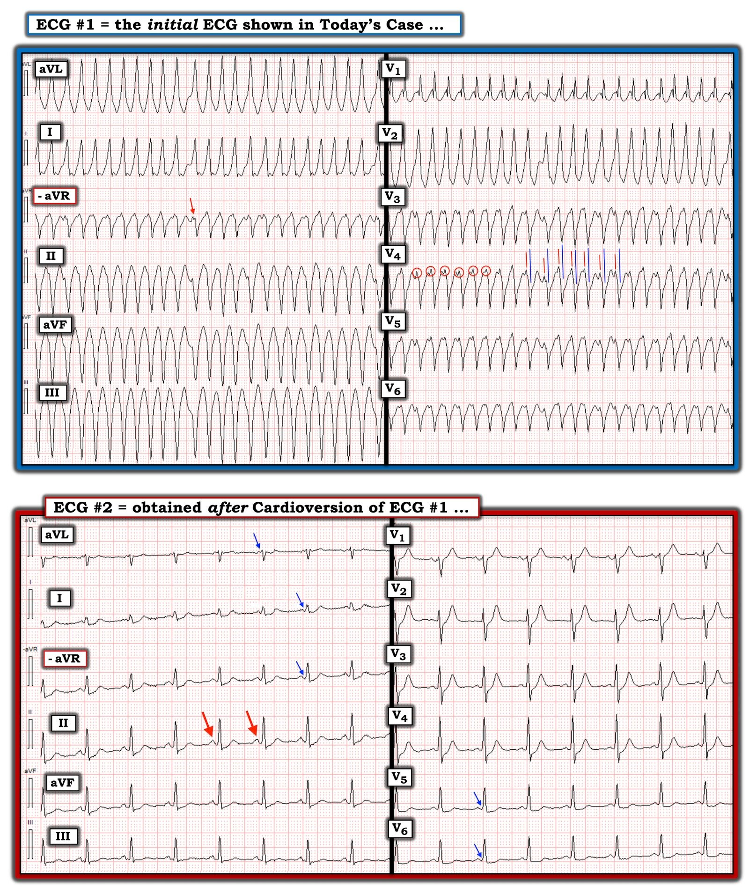
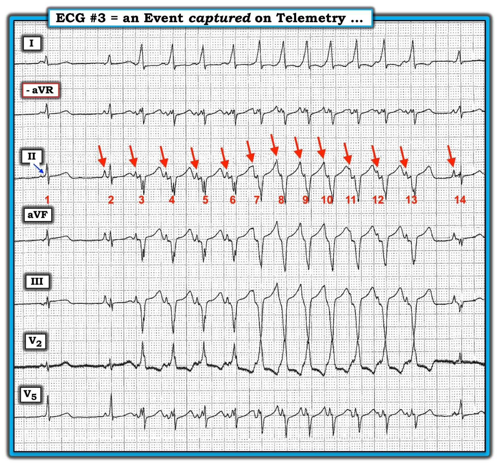
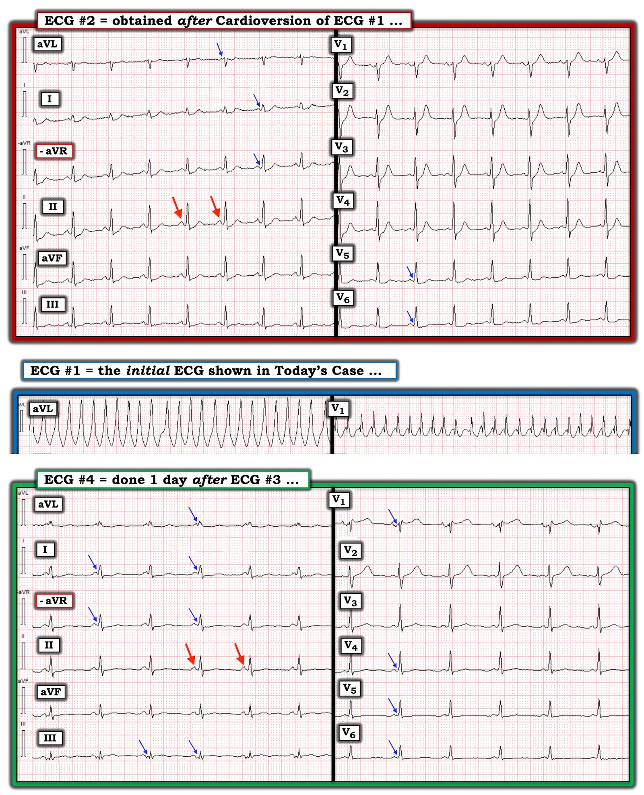
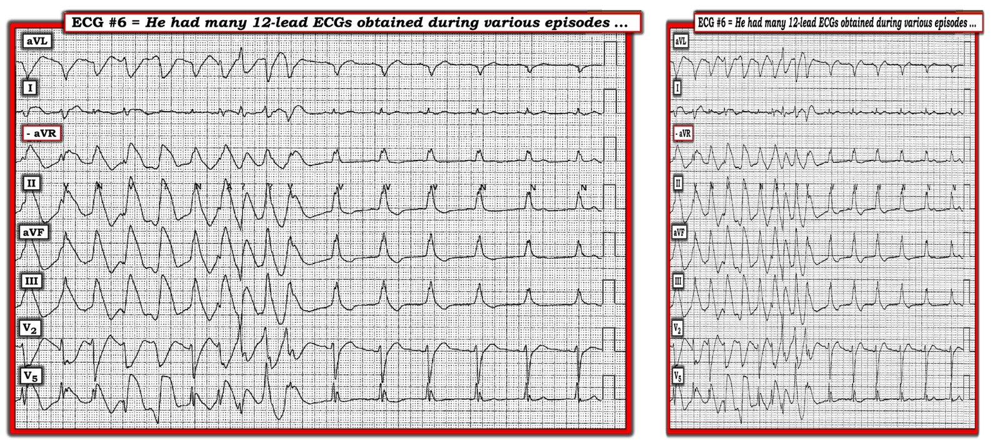

24/04/2022 — Một phụ nữ 60 mấy tuổi bị hồi hộp đánh trống ngực
Bản dịch tiếng Việt của bài "A woman in her 60s with palpitations" – Dr. Smith’s ECG Blog. Giữ nguyên toàn bộ 13 hình ảnh của bản gốc.
Ca bệnh do Magnus Nossen MD gửi, Meyers biên tập
Một phụ nữ 60 mấy tuổi, trước đây khỏe mạnh, đến một phòng khám ngoại trú vì hồi hộp đánh trống ngực (palpitations). Các dấu hiệu sinh tồn trong giới hạn bình thường, ngoại trừ tần số tim. Theo mô tả, điện tâm đồ ghi tại đó cho thấy một nhịp nhanh không đều, và bệnh nhân lập tức được chuyển đến khoa cấp cứu.
Đây là điện tâm đồ của bà lúc đến:


Có một nhịp nhanh QRS rộng (wide complex tachycardia) không đều hoàn toàn (irregularly irregular) (điều này khó xác định ở tần số rất cao như thế này). Hình dạng QRS trông gần như đơn dạng ở một số chỗ, và đa dạng ở những chỗ khác. Chẩn đoán phân biệt nhịp có thể gồm PMVT, VT lúc ngưng lúc chạy, AF kèm WPW, AF kèm dẫn truyền lệch hướng, hoặc một SVT kèm dẫn truyền lệch hướng lúc ngưng lúc chạy.
Theo tôi, nhịp này quá "có tổ chức" để là PMVT kinh điển.
Vì nhịp không đều hoàn toàn và đa dạng, tôi sẽ coi đây là AF kèm WPW cho đến khi chứng minh được điều ngược lại, nhưng theo kinh nghiệm của tôi, điện tâm đồ này cho thấy mức độ đa dạng của QRS tương đối thấp và ít không đều hơn phần lớn các trường hợp AF kèm WPW.
Cả nhịp QRS không đều lẫn nhịp QRS đa dạng đều là chống chỉ định của adenosine.
Procainamide sẽ là một lựa chọn tốt, và sốc điện luôn là một lựa chọn tốt.
Bà được an thần và sốc điện chuyển nhịp.
Đây là điện tâm đồ của bà sau sốc điện chuyển nhịp:


Điện tâm đồ #2 – Ngay sau sốc điện chuyển nhịp: ST chênh xuống phù hợp, rõ nhất ở V5-6 và chuyển đạo II, thứ phát do thiếu máu cục bộ dưới nội tâm mạc, nhiều khả năng còn sót lại sau cơn nhịp nhanh trước đó. Có khoảng PR ngắn và sóng delta kín đáo ở nhiều chuyển đạo.
Bà vẫn không có triệu chứng. Bà được nhập viện để thăm dò thêm.
Theo dõi từ xa (telemetry) ghi được biến cố này:


Bản ghi này dường như cho thấy một cơn nhịp nhanh nhĩ kịch phát được dẫn truyền xuống thất, tạo thành một nhịp nhanh QRS rộng. Chuyển đạo aVR dường như cho thấy rõ hoạt động nhĩ. Có một mức đa dạng QRS nhẹ.
Đây là điện tâm đồ của bà vào ngày hôm sau:


Điện tâm đồ ngày hôm sau với tiền kích thích rõ hơn.
Siêu âm tim bình thường.
Bệnh nhân được chuyển đi thăm dò điện sinh lý vì nghi ngờ rung nhĩ và WPW. Trong khi thăm dò điện sinh lý, đã gây ra được AVRT, rồi nhịp này thoái biến thành rung nhĩ với dẫn truyền xuôi chiều và ngược chiều. Đã tiến hành triệt đốt bằng sóng có tần số radio một đường phụ (bypass tract) vùng sau vách bên phải.
Những điểm cần học:
Các nhịp nhanh QRS rộng không đều hoàn toàn gồm PMVT, AF kèm dẫn truyền lệch hướng (BBB, NSIVCD, v.v.), và AF kèm WPW.
Các đặc điểm quan trọng của AF kèm WPW gồm phức bộ QRS đa dạng và khoảng R-R rất ngắn (ngắn tới 200 msec hoặc thậm chí ngắn hơn), tương ứng với tần số thất rất nhanh.
Các lựa chọn điều trị AF kèm WPW gồm procainamide và sốc điện chuyển nhịp.
Các ca khác có AF kèm WPW:
A 47-year-old man with abdominal pain and heart rates approaching 300 bpm (Một người đàn ông 47 tuổi bị đau bụng và tần số tim gần 300 nhịp/phút)
A Clinical Scenario to Recognize- Irregular WCT (Một tình huống lâm sàng cần nhận ra – WCT không đều)
Wide Complex Tachycardia, and What is “Concealed Conduction?” (Nhịp nhanh QRS rộng, và “dẫn truyền ẩn” là gì?)
Đây là một ca liên quan và khó, với các cơn AVRT ngược chiều từng lúc:
Wide Complex Tachycardia: is the patient stable or unstable? (Nhịp nhanh QRS rộng: bệnh nhân ổn định hay không ổn định?)

===================================
BÌNH LUẬN CỦA TÔI, bởi KEN GRAUER, MD (24/4/2022):
===================================
Một ca hấp dẫn do Dr. Magnus Nossen, một trong những người đóng góp thường xuyên của chúng tôi, gửi đến. Dr. Nossen hành nghề tại Na Uy — vì vậy tôi luôn hoan nghênh những ca bệnh tỉ mỉ chi tiết của anh, vốn cho chúng ta cơ hội làm quen hơn với định dạng Cabrera (Cabrera Format), định dạng thường được dùng ở Thụy Điển (cũng như ở một số vùng của Na Uy, Phần Lan, Nhật Bản, Ý — và ở một số khu vực chọn lọc khác trên thế giới).
Ca bệnh hôm nay:
Nhắc lại — Bệnh nhân trong ca hôm nay là một phụ nữ 60 mấy tuổi, trước đây khỏe mạnh, đến khám tại một phòng khám ngoại trú vì “hồi hộp đánh trống ngực”.
- Để rõ ràng — tôi đã chép lại điện tâm đồ ban đầu của ca hôm nay — kèm thêm sơ đồ hướng các chuyển đạo dùng trong định dạng Cabrera (Cabrera Format) ở góc dưới bên phải của Hình 1 (Để biết thêm về định dạng Cabrera — Xem PHẦN BỔ SUNG của tôi ở bên dưới).
- Dù tôi đi đến cùng những kết luận chung về ca này như Drs. Nossen và Meyers — quan điểm của tôi có khác đôi chút về một số khía cạnh của ca bệnh.


SUY NGHĨ CỦA TÔI về điện tâm đồ ban đầu trong ca hôm nay:
Như Drs. Meyers và Nossen đã nêu — điện tâm đồ #1 thể hiện một nhịp WCT ( = nhịp nhanh QRS rộng — Wide-Complex Tachycardia) có vẻ “gần như đều” ở một số chỗ — và không đều hoàn toàn ở những chỗ khác.
- Mặc dù có những chỗ gần như đều — lý do khiến tôi ngay lập tức nghĩ đến WPW kèm AFib rất nhanh là: i) Như Drs. Meyers và Nossen đã nêu — sự thay đổi hình dạng QRS là rất ít, và ít hơn nhiều so với mức mong đợi trong PMVT (nhịp nhanh thất đa dạng — PolyMorphic VT); ii) Xem xét kỹ nhịp ở 6 chuyển đạo trước tim (ngay cả khi không dùng compa đo!) — cho thấy một nhịp rõ ràng là không đều hoàn toàn. (Khi tôi kiểm tra nhịp này cẩn thận hơn trong sự thoải mái của chiếc ghế bàn làm việc thư giãn — compa đo xác nhận nhịp còn không đều hơn từ nhát này sang nhát kế tiếp so với vẻ ban đầu); iii) Sóng P xoang không có — và quan trọng nhất — iv) Tần số của nhịp trong Hình 1 cực kỳ nhanh — đạt 250/phút ở nhiều chỗ (và đôi khi đạt ~300/phút = thấy qua sự hiện diện của các khoảng R-R ngắn chỉ bằng 1 ô lớn = 200 msec).
ĐIỂM THEN CHỐT (PEARL) #1: Ở người lớn — AFib hiếm khi duy trì tần số tim liên tục trên 200/phút ở những bệnh nhân không có AP (đường phụ — Accessory Pathway). Dù có ngoại lệ ở những bệnh nhân có trương lực giao cảm quá mức — AFib kéo dài ở tần số vượt quá 250/phút gợi ý mạnh WPW cho đến khi bạn chứng minh được điều ngược lại (tức là, thời kỳ trơ “sẵn có” của nút AV bình thường nói chung ngăn không cho AFib kéo dài ở tần số cao hơn hẳn 200/phút).
ĐIỂM THEN CHỐT (PEARL) #2: Khi AFib nhanh — nó thường “trông” đều. Điều này có thể giải thích tính gần như đều của nhịp ở phần đầu của nhịp trong Hình 1.
- Một khả năng khác — Bệnh nhân WPW thường xuất hiện nhịp SVT vào lại phụ thuộc đường phụ, được gọi là AVRT (nhịp nhanh vào lại nhĩ thất — AtrioVentricular Reentrant Tachycardia). Khi dẫn truyền xuôi dòng qua đường phụ tăng nhanh — AVRT có thể thoái biến thành AFib (như đã được chứng minh xảy ra trong ca hôm nay khi thăm dò điện sinh lý — và có lẽ cũng đang xảy ra trong Hình 1?).
Có hoạt động nhĩ trong Hình 1 không?
Ban đầu tôi đã nghĩ có hoạt động nhĩ trong Hình 1. Tôi đã đánh dấu điện tâm đồ ban đầu này ở Ô TRÊN trong Hình 2:
- Các chuyển đạo trước tim V3, V4, V5 và V6 đều cho thấy một khía rõ rệt mà lúc đầu tôi nghĩ có thể là hoạt động nhĩ (Thấy rõ nhất ở chuyển đạo V4 — trong đó tôi đã khoanh tròn 6 khía như vậy).
- Tuy vậy — việc tần số của các khía này không đều cho tôi biết đây không phải là phân ly nhĩ thất (vì khi đó tần số nhĩ phải đều). Thay vào đó — các sóng lệch có khía này liên quan (gắn liền) với QRS (Lưu ý khoảng cách không đổi giữa đỉnh của mỗi khía [các vạch ĐỎ] — và đáy của QRS kế cận [các vạch XANH]).
- Chuyển đạo -aVR cho thấy rõ nhất rằng khía này dường như là một phần của QRS (mũi tên ĐỎ ở chuyển đạo này).
Do tần số của nhịp ban đầu cực kỳ nhanh — bệnh nhân đã được an thần và sốc điện chuyển nhịp. Điện tâm đồ sau sốc điện chuyển nhịp được trình bày ở Ô DƯỚI trong Hình 2.
- Các mũi tên ĐỎ trong điện tâm đồ #2 cho thấy sự trở lại của sóng P xoang, dù kèm khoảng PR ngắn.
- Như Drs. Nossen và Meyers đã nêu — dường như có sóng delta rất kín đáo ở một số chuyển đạo (các mũi tên XANH).


Ca bệnh tiếp diễn:
Như Drs. Nossen và Meyers đã nêu — sau đó dải nhịp 7 chuyển đạo trong Hình 3 được ghi lại trên theo dõi từ xa (Telemetry).
- Nhát thứ 1 trong dải nhịp này được dẫn truyền với một sóng P biên độ nhỏ, dương ở chuyển đạo II, trông khác với sóng P dương, lớn hơn mà chúng ta thấy ở chuyển đạo II của điện tâm đồ #2 sau khi chuyển về nhịp xoang. Vì vậy nhát #1 trong điện tâm đồ #3 có lẽ không có nguồn gốc xoang. Tuy vậy, mũi tên XANH mảnh gợi ý có tiền kích thích (một sóng delta).
- Tiếp theo là thêm một hình dạng sóng P khác, nhọn — và dường như khởi phát một loạt 12 nhát ATach (nhịp nhanh nhĩ — Atrial Tachycardia) hơi không đều với tần số ~140-150/phút. Loạt ATach này kết thúc bằng sự chậm lại đột ngột ở nhát #14.
Điều tôi thấy đặc biệt thú vị ở rối loạn nhịp này — là sự thay đổi hình dạng QRS trong suốt dải nhịp.
- Hình dạng QRS của các nhát hẹp #1, 2 và 14 khá giống hình dạng QRS trong bản ghi sau sốc điện chuyển nhịp ( = điện tâm đồ #2), trong đó tiền kích thích chỉ ở mức tối thiểu.
- Như đã nêu — tôi tin mũi tên XANH ở chuyển đạo II của nhát #1 chỉ ra một sóng delta kín đáo. Tôi không thấy sóng delta hay tiền kích thích nào ở nhát #2.
- Hình dạng QRS bắt đầu rộng ra từ nhát #3 — và thay đổi đáng kể bắt đầu từ nhát #7. So sánh hình dạng QRS của các nhát #7-đến-13 ở mỗi chuyển đạo trong 7 chuyển đạo của Hình 3 thì rất giống hình dạng QRS ở cùng các chuyển đạo đó trên điện tâm đồ ban đầu (điện tâm đồ #1), trong đó có tiền kích thích hoàn toàn!
- Giống như với nhát thứ 1 trong loạt ATach này ( = nhát #2) — không có tiền kích thích ở nhát cuối cùng trong Hình 3 ( = nhát #14), nhát cũng xuất hiện sau một khoảng ngưng ngắn.
ĐIỂM THEN CHỐT (PEARL) #3: Cần nhớ rằng bệnh nhân WPW có thể dẫn truyền các xung động trên thất theo 1 trong 3 cách. Đó là: i) Có thể có dẫn truyền bình thường (trong đó mọi xung động đi qua đường dẫn truyền bình thường của nút AV — nên không có sóng delta và QRS hẹp, trông bình thường); ii) Có thể có tiền kích thích hoàn toàn (trong đó mọi xung động đi qua đường phụ trước — nên có sóng delta ở nhiều chuyển đạo, và QRS rộng) — HOẶC — iii) Có thể có tiền kích thích một phần (khi đó ít chuyển đạo biểu hiện sóng delta hơn, và những sóng delta thấy được thì kín đáo hơn — và — QRS có thể chỉ rộng ra tối thiểu).
- Nhiều điều kiện khác nhau ảnh hưởng đến mức độ tiền kích thích tương đối có thể thấy ở bất kỳ thời điểm nào. Điều này giải thích vì sao mặc dù khoảng PR ngắn trong bản ghi sau sốc điện chuyển nhịp (Hình 2) — sóng delta lại rất kín đáo, và QRS không rộng ra.
- Điều này cũng có thể giải thích vì sao ngay cả khi bạn biết bệnh nhân có WPW — bạn sẽ không phải lúc nào cũng thấy sóng delta và QRS rộng ra.


KẾT LUẬN CA BỆNH:
Bản ghi cuối cùng trong ca hôm nay được ghi vào ngày sau cơn ATach đã được ghi lại trên theo dõi từ xa. Tôi thấy thú vị khi so sánh điện tâm đồ #4 cuối cùng này — với điện tâm đồ #2 sau sốc điện chuyển nhịp — rồi với hình dạng QRS ở một số chuyển đạo chọn lọc trong lúc tiền kích thích hoàn toàn thấy ở điện tâm đồ #1 (3 bản ghi này được ghép lại trong Hình 4):
- Nhịp xoang lại hiện diện trong điện tâm đồ #4 (các mũi tên ĐỎ ở chuyển đạo II). Tuy nhiên, khoảng PR ngắn — và thấy sóng delta.
- So với điện tâm đồ #2 — có nhiều tiền kích thích hơn trong điện tâm đồ #4.
- Và — so với điện tâm đồ #2 — phức bộ QRS ở chuyển đạo aVL và V1 trong điện tâm đồ #4 trông giống hơn một chút với hình dạng QRS ở cùng các chuyển đạo đó trong bản ghi có tiền kích thích hoàn toàn điện tâm đồ #1.
ĐIỂM THEN CHỐT (PEARL) #4: Sự thay đổi hình dạng QRS trong các rối loạn nhịp nhanh trên thất thấy ở ca hôm nay là kết quả của sự thay đổi mức độ tiền kích thích tương đối. Chúng ta thấy điều này rõ nhất ở Hình 3 — trong đó các nhát #3-đến-13 cho thấy mức độ hỗn hợp khác nhau giữa các phức bộ QRS được dẫn truyền bình thường — và các phức bộ QRS rộng hơn nhiều, trong đó xung động gần như hoàn toàn dẫn truyền qua đường phụ.


NHẬN ĐỊNH Cuối cùng từ ca hôm nay:
Ca bệnh này mang lại nhiều bài học theo nhiều cách:
- Mặc dù có AFib với tần số tim trên 200/phút ở người phụ nữ hơn 60 tuổi này — bệnh nhân vẫn ổn định huyết động với rối loạn nhịp này! Điều này nhấn mạnh một điểm lâm sàng quan trọng: một số bệnh nhân WPW vẫn ổn định huyết động bất chấp tần số AFib cực kỳ nhanh trong những khoảng thời gian dài đáng ngạc nhiên.
- Y văn cho thấy phần lớn bệnh nhân WPW gặp vấn đề do các rối loạn nhịp nhanh phụ thuộc đường phụ — đều gặp vào giai đoạn đầu tuổi trưởng thành (thường trước 40 tuổi). Giá trị lâm sàng của quy tắc chung này — là việc tình cờ phát hiện WPW ở một người lớn không triệu chứng sau tuổi trung niên thường không cần can thiệp. Ca hôm nay cho chúng ta một ngoại lệ của quy tắc chung này — ở chỗ người phụ nữ 60 mấy tuổi trước đây khỏe mạnh này đến khám với một rối loạn nhịp có khả năng đe dọa tính mạng (AFib cực kỳ nhanh), đòi hỏi phải triệt đốt đường phụ.
- Mức độ thay đổi hình dạng QRS và thay đổi tần số tim thường thấy trên điện tâm đồ của bệnh nhân đến khám với AFib liên quan WPW lại không thấy trên bản ghi ban đầu của ca hôm nay. Thay vào đó — tính đa dạng và những thay đổi tần số tim rõ rệt từng lúc chỉ thấy về sau, trong cơn ATach được ghi lại trên theo dõi từ xa (ở Hình 3).
- Thăm dò điện sinh lý trong ca hôm nay đã gây ra AVRT, trong đó có cả dẫn truyền ngược chiều lẫn xuôi chiều. Sau đó, trong phòng điện sinh lý, nhịp thoái biến thành AFib rất nhanh. Tính đều ở phần đầu của rối loạn nhịp nhanh thấy trong Hình 1 — gợi ý rằng một chuỗi thay đổi dẫn truyền tương tự có thể đã xảy ra bên ngoài phòng điện sinh lý ở bệnh nhân này — cùng với đó còn ghi nhận thêm một rối loạn nhịp nhanh trên thất khác (nhịp nhanh nhĩ) trên theo dõi từ xa (Hình 3).
- Ngay cả khi có — thường khó nhận ra sóng delta trong các rối loạn nhịp nhanh liên quan WPW.
PHẦN BỔ SUNG (24/4/2022):
=================================
Để tiện theo dõi — tôi trích phần dưới đây từ Bình luận của tôi trong bài đăng ngày 26 tháng Mười năm 2020 trên Dr. Smith’s Blog.
=================================
Các điện tâm đồ trong ca hôm nay được ghi theo Định dạng Cabrera (Cabrera Format). Người ta dễ quên rằng điện tâm đồ là một công cụ mang tính quốc tế. Trong khi một định dạng điện tâm đồ chuẩn (chỉ có những khác biệt nhỏ) được dùng trên khắp Hoa Kỳ — thì nhiều quốc gia khác lại dùng những định dạng khác.
- Một số thông số điện tâm đồ có thể khác nhau ở các định dạng điện tâm đồ khác này. Thường gặp nhất là tốc độ ghi (tức là dùng 50 mm/giây — thay vì tốc độ chuẩn 25 mm/giây được dùng ở Hoa Kỳ) — và — trình tự hiển thị các chuyển đạo chi (khác biệt trong định dạng Cabrera — như thấy rõ ở các bản ghi trình bày phía trên trong ca hôm nay).
- Vì chúng ta quen với bất kỳ định dạng điện tâm đồ nào được dùng ở quốc gia nơi mình hành nghề — các định dạng điện tâm đồ khác có thể xa lạ với chúng ta. Do đó — cách bố trí chuyển đạo chi của điện tâm đồ trong Hình 5 có thể đã trông lạ lẫm khi bạn lần đầu xem điện tâm đồ ban đầu trong ca hôm nay. Đó là vì chuyển đạo chi thứ 1 được hiển thị trong Hình 5 là chuyển đạo aVL — và, một chuyển đạo aVR được hiển thị giữa chuyển đạo I và II.
Định dạng Cabrera:
Mô tả đầu tiên về định dạng chuyển đạo chi theo trình tự (sequential) như trong Hình 5 là của Fumagalli vào năm 1949. Dù vậy — công lao cho định dạng này lại được gán cho Cabrera. Hệ thống Cabrera được dùng thường quy ở Thụy Điển từ năm 1977. Một số quốc gia khác cũng dùng định dạng Cabrera (tức là, như ca hôm nay, do Dr. Nossen từ Na Uy gửi tới). Có 2 Điểm thay đổi trong Định dạng Cabrera so với định dạng chuẩn được dùng ở Hoa Kỳ và ở nhiều (phần lớn) quốc gia khác: i) Định dạng Cabrera thường dùng tốc độ ghi 50 mm/giây; và, ii) Dùng một trình tự chuyển đạo chi khác.
- Như tôi đã “thú nhận” trong bài đăng ngày 26 tháng Chín năm 2018 trên Dr. Smith’s ECG Blog — bộ não của tôi đã được “lập trình” để đọc điện tâm đồ 12 chuyển đạo và dải nhịp ở tốc độ 25 mm/giây vốn là chuẩn ở Hoa Kỳ. Sau hơn 4 thập kỷ đọc hàng chục nghìn bản ghi — tôi nhận thấy có một quá trình “nhận diện hình ảnh” tức thời (tự động) diễn ra trong não mình, thậm chí trước khi tôi bắt đầu đọc một cách hệ thống bất kỳ bản ghi nào. Quá trình này bị vô hiệu hóa bởi hình dạng xa lạ của các phức bộ có kích thước khác thường khi dùng tốc độ ghi 50 mm/giây.
- LƯU Ý #1: Các quốc gia khác (như Đức) thường dùng tốc độ ghi 50 mm/giây. Thông thường sẽ thấy ngay khi nhìn qua rằng đã dùng tốc độ 50 mm/giây — nhưng đôi khi thì không. Điều này đặc biệt đúng khi đánh giá tần số tim của các nhịp QRS hẹp (tức là, một nhịp QRS hẹp có thể trông rộng ra và chậm quá mức nếu bạn không nhận ra tốc độ ghi 50 mm/giây). Vì vậy — điều quan trọng là phải lưu ý tới tốc độ ghi (và làm rõ xem bản ghi bạn đang đọc có phải từ nước ngoài không — đặc biệt nếu tốc độ ghi không được ghi chú ở phía dưới điện tâm đồ).
- LƯU Ý #2: Dr. Nossen đã có nhã ý chuyển các bản ghi ông gửi cho ca hôm nay sang tốc độ 25 mm/giây mà phần lớn độc giả của chúng tôi đã quen thuộc. Việc xác minh tốc độ ghi đặc biệt quan trọng trong ca hôm nay — vì ước tính chính xác tần số tim là manh mối MẤU CHỐT để xác định nhịp trong Hình 1.
Trình tự chuyển đạo chi bị thay đổi trong Định dạng Cabrera:
Hình chèn ở góc dưới bên phải của Hình 5 cho thấy cơ sở của trình tự chuyển đạo chi bị thay đổi trong định dạng Cabrera.
- Thay vì dùng chuyển đạo aVR — định dạng Cabrera dùng âm aVR ( = chuyển đạo -aVR) — nằm đối diện trực tiếp (tức là, cách 180 độ) với aVR dương. Như thấy trong hình chèn của Hình 1 — chuyển đạo -aVR nằm ở +30 độ (trong hình chữ nhật MÀU XANH).
- Xét trên nhiều mặt — Định dạng Cabrera mang lại một cách hiển thị hợp lý hơn nhiều cho trình tự chuyển đạo chi. Trái với định dạng truyền thống của Hoa Kỳ (trong đó các chuyển đạo chi được nhóm thành các chuyển đạo chuẩn I,II,III — và các chuyển đạo tăng thế aVR,aVL,aVF) — định dạng Cabrera có trình tự tăng tiến dần dần (cách đều nhau), bắt đầu với góc nhìn chuyển đạo cao nhất = chuyển đạo aVL (ở -30 độ) — rồi dịch dần sang phải (theo khoảng cách 30 độ) — cho tới khi đến chuyển đạo nằm xa nhất về bên phải = chuyển đạo III (ở +120 độ).
- Định dạng Cabrera làm tăng giá trị lâm sàng của aVR — bằng cách thực chất là thêm chuyển đạo –aVR làm chuyển đạo chuyển tiếp giữa vị trí bên và vị trí dưới trên mặt phẳng trán. Điều này cho phép xác định đặc hiệu hơn mức độ lan rộng của thiếu máu cục bộ hoặc nhồi máu ở các chuyển đạo bên cao và chuyển đạo dưới. Nó cũng đơn giản hóa việc tính cả trục lẫn vectơ ST-T trên mặt phẳng trán — vì giờ đây chỉ cần liếc qua 6 chuyển đạo Cabrera theo trình tự là xác định được ngay (các) chuyển đạo nào có sóng lệch QRS và/hoặc ST-T thực (net) lớn nhất. Ví dụ, trong Hình 5 — Hãy để ý việc xác định trục mặt phẳng trán DỄ DÀNG đến mức nào — vì ta thấy ngay rằng trục phải nằm giữa hai sóng lệch dương (và gần với sóng lệch dương lớn nhất ở aVL tại -30 độ hơn, so với sóng lệch nhỏ hơn một chút ở chuyển đạo I tại 0 độ).
- Một lợi thế tiềm năng khác của định dạng Cabrera trong trình tự chuyển đạo chi — là việc so sánh với các bản ghi liên tiếp ở cùng một bệnh nhân trở nên dễ dàng hơn. Đó là vì trình tự chuyển đạo chi tăng tiến từ từ hơn của định dạng Cabrera giúp thấy rõ hơn nhiều, khi so sánh các bản ghi liên tiếp, đâu là biến đổi về sự hiện diện sóng Q, biên độ QRS và độ dịch chuyển ST-T nhiều khả năng là “thay đổi thật” — so với thay đổi dạng sóng điện tâm đồ nhiều khả năng là hậu quả của một thay đổi nào đó trong việc đặt điện cực.
- ĐIỀU CỐT LÕI: Dù có những lợi thế tiềm năng nêu trên khi dùng trình tự chuyển đạo chi hợp lý hơn của định dạng Cabrera — có vẻ khó mà định dạng này thay thế được định dạng truyền thống không theo trình tự của Hoa Kỳ, ít nhất là trong tương lai gần. Thói quen lâu đời rất khó bỏ … — kể cả khi một cách tiếp cận mới hơn có vẻ dễ triển khai về kỹ thuật và có lợi về lâm sàng.
================================
Nếu điện tâm đồ được ghi ở tốc độ 50 mm/giây thì sao?
NẾU bạn tham gia các diễn đàn điện tâm đồ quốc tế — hoặc có dịp trao đổi với đồng nghiệp sống ở các nước khác — thỉnh thoảng bạn sẽ gặp điện tâm đồ ghi ở tốc độ 50 mm/giây. Vì những khó khăn mà tôi sẵn lòng thừa nhận trong việc đọc các rối loạn nhịp và điện tâm đồ 12 chuyển đạo ghi ở tốc độ 50 mm/giây — tôi muốn chia sẻ một cách nhanh và dễ mà tôi đã xây dựng để “hiệu chỉnh bằng mắt” hình dạng rộng ra do tốc độ ghi tăng gấp đôi lên 50 mm/giây.
- Điện tâm đồ trong Hình 6 được lấy từ phần Bình luận của tôi trong bài đăng ngày 26 tháng Mười năm 2020 trên Dr. Smith’s Blog. Bản ghi monitor nhiều chuyển đạo này dùng trình tự chuyển đạo chi Cabrera và tốc độ ghi 50 mm/giây (Ô BÊN TRÁI trong Hình 6). Đặc biệt vì ST biến dạng hình răng cá mập (shark-tooth) trong nửa đầu bản ghi — ban đầu tôi đã gặp khó khăn trong việc hình dung mình đang thấy gì.
- ĐIỂM THEN CHỐT (PEARL): Để bù trừ cho tốc độ ghi 50 mm/giây — tôi đã tải bản ghi này lên Power Point và: i) Tôi thu hẹp chiều rộng của bản ghi này đi 50% (tức là, từ 10 inch xuống 5 inch); và, ii) Tôi bỏ chọn mục “Keep Proportions” (giữ tỷ lệ) ( = ô “Lock aspect ratio” – khóa tỷ lệ khung hình) trong Format Pane ở phần tùy chọn Size của Power Point. Làm như vậy sẽ thu hẹp chiều rộng điện tâm đồ đi 50% mà không ảnh hưởng đến chiều cao. Như thấy ở Ô BÊN PHẢI trong Hình 6 — Bạn sẽ có số ô nhỏ nhiều gấp đôi (điều này phải được tính đến khi đánh giá tần số và các khoảng) — nhưng các phức bộ QRS và sóng ST-T giờ trông “bình thường” trong mắt tôi.

